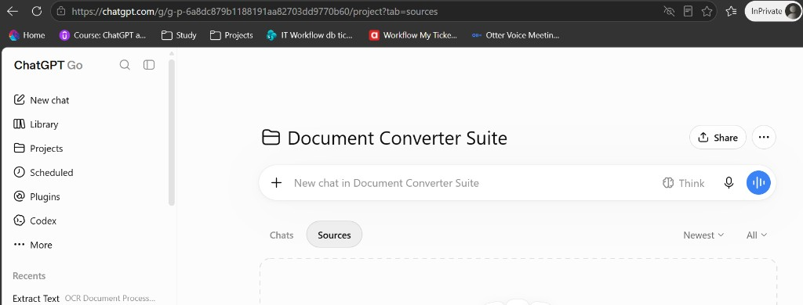
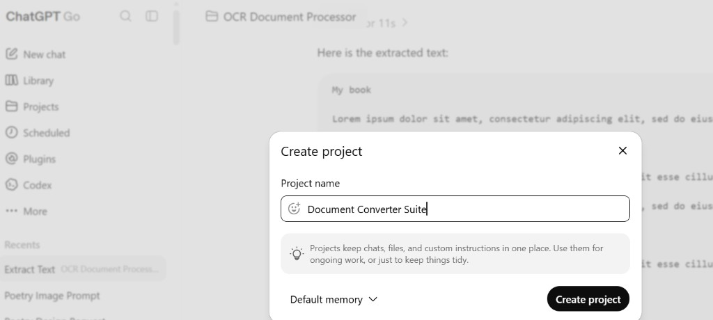
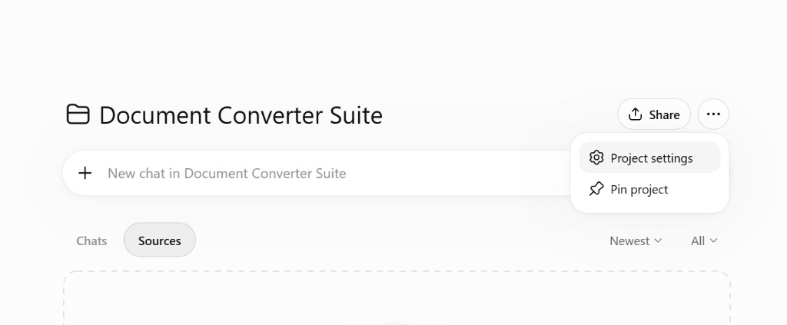
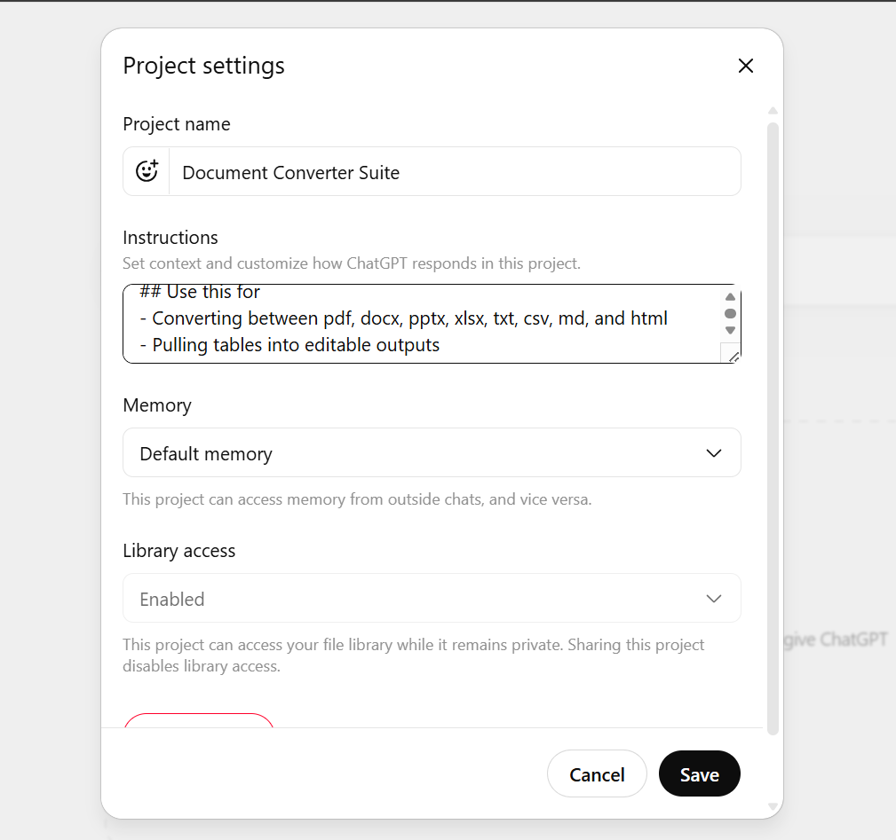
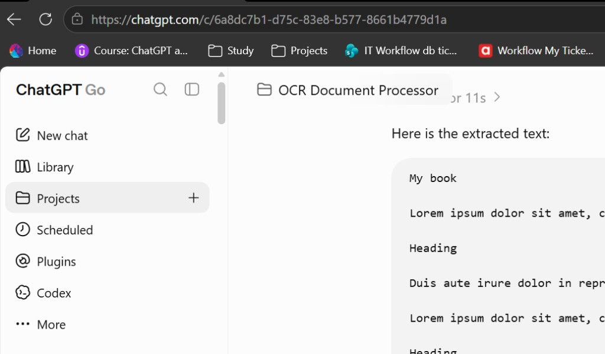

ChatGPT plugins
Reusable workflows set up as Projects on ChatGPT Go. Click a plugin to see what it does and how to install it.
ChatGPT Go note: The Skills tab is not available on Go or Free. These plugins use Project instructions instead — one project per plugin, paste the SKILL.md block from each plugin page.
| Plan | Skills tab | This guide (Projects) | Notes |
|---|---|---|---|
| Free | No | Yes | Use Projects + paste instructions. File uploads limited to 3 per day. |
| Go | No | Yes | Same as Free for Skills — use Projects. ~80 file uploads per 3 hours. |
| Plus / Pro | Maybe (Work mode) | Yes | Check Plugins → Skills in Work. Projects method always works. |
| Business / Enterprise | Yes | Yes | Admin may need to enable Skills. Projects method works on all plans. |
Follow these steps once per plugin. Repeat for each of the four plugins below.
-
Step 1 — Confirm your plan (Go or Free)
On Go and Free, you will see Plugins in the sidebar but no Skills tab. That is expected — use Projects instead (sidebar → Projects).

ChatGPT Go — use Projects for plugins. Plugins in the sidebar is for connectors only (no Skills tab). -
Step 2 — Create a new project
Sidebar → Projects → New project. Name it exactly after the plugin (e.g. OCR Document Processor or Document Converter Suite). Leave memory as Default memory → Create project.

Create project — use the plugin name as the project name. -
Step 3 — Open project settings
Inside the project, click the ⋯ (three dots) next to Share in the top-right → select Project settings. There is no gear icon on Go — settings are in this menu.

⋯ menu → Project settings (gear icon is inside this menu). -
Step 4 — Paste plugin instructions
In Project settings, paste the full instructions block from the plugin page (or the matching .md file in skills/instructions/) → Save.

Paste the SKILL.md block into Instructions → Save. -
Step 5 — Start a chat and test
Open the Chats tab (not Sources — Sources is for connecting Drive/Slack, optional). Click + New chat in [project name], upload a file or ask a question, and confirm the plugin behaviour matches the instructions.

Working example — OCR Document Processor extracting text from a scan.
Plugins
OCR Document Processor
Extract text from scans, receipts, and business cards.
DocumentsDocument Converter Suite
Convert PDFs, Office docs, markdown, and tables between formats.
DocumentsData Storyteller
Turn CSV and spreadsheet data into narrative reports with charts.
AnalyticsFinancial Calculator
Loan EMI, NPV, retirement projections, and scenario comparisons.
Finance